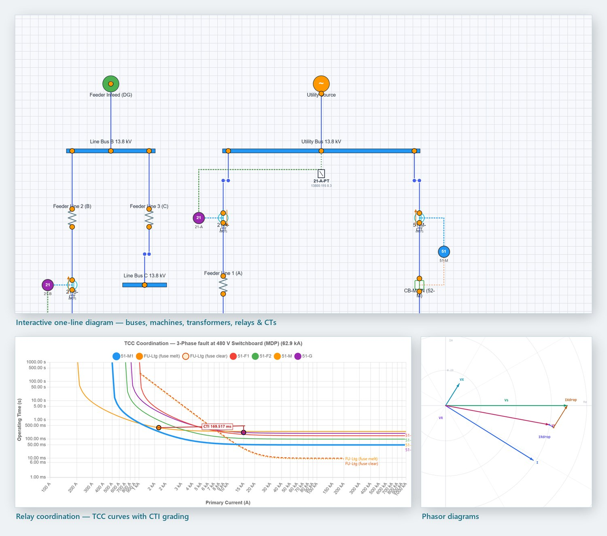

Featured · Flagship application
Power System Fault Analysis & Protection
A full browser-based studies workbench for protection engineers and students. Build a network on an interactive one-line diagram, then run fault, coordination, power-flow, arc-flash and contingency studies against a server-grade analysis engine — all in one place. It's the most capable tool on this site. It was built to accompany the live training NERX provides — its teacher mode, guided tutorials and teaching worksheets are designed to be driven alongside an instructor in a real session.
- Model the network. Buses, generators, sources, transformers, lines, loads and impedances, placed and wired on a drag-and-drop one-line with industry-standard parameters.
- Fault analysis. Symmetrical-component fault currents for three-phase, line-to-ground, line-to-line and double-line-to-ground faults, with positive / negative / zero sequence networks, bus voltages, and a live fault overlay on the diagram.
- Relay coordination. Overcurrent (50/51, 50N/51N), directional (67) and distance (21) elements; IEEE/ANSI & IEC curves; TCC plotting; automated coordination checks with CTI grading and violation detection; and reach / protection-coverage sweeps.
- Protection sequence. Re-solves the clearing cascade with auto-reclose (79) and lockout (86), played back on the one-line and a sequence timeline.
- Power flow. A Newton-Raphson solver (slack / PV / PQ) validated against the IEEE 14-bus benchmark, overlaying per-bus V/θ and per-branch P/Q loading and seeding the pre-fault operating point.
- Arc flash (IEEE 1584-2018). Incident energy, arc-flash boundary and PPE category per equipment, or a whole-system study with one row per bus.
- N-1 contingency. Outages every branch and source in turn and re-solves, ranking overloads, voltage violations, islanding and dropped load — highlighted on the diagram.
- Programmable logic. A PLC-style structured-text scan engine whose Boolean variables drive breaker trip/close equations, one scan per protection-sequence frame.
- Teaching mode & worksheets. Step-by-step Thévenin reduction you can scrub, KaTeX hand-calc sheets with printable reports, and a MATLAB-flavored script worksheet with phasor plots.
- Phasors & oscillography. Animated bus voltages and branch currents from any solved case.
- Live teacher mode. Host a room with a 6-character code; students join and follow the same diagram and analyses in real time, with control hand-off, presence cursors, a roster and chat.
- Guided tutorials. Self-driving narrated tours that build a plant, wire protection and run each study — with "take the wheel" hand-offs so you can try a step yourself.
- Projects. JSON import/export, ready-to-open sample and teaching models, and a Git-friendly file format.
Launch the application →
Opens in a new tab · free to use · best on desktop